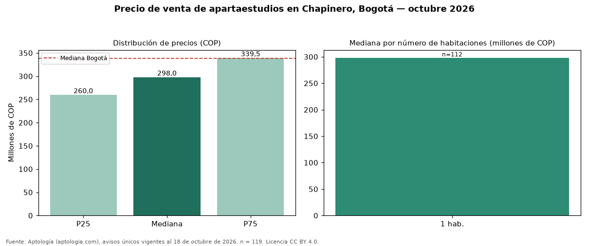

Precio de venta de apartaestudios en Chapinero, Bogotá — octubre 2026
Con 119 avisos únicos analizados, el precio mediano de apartaestudios en venta en Chapinero, Bogotá es COP 298 millones. Frente al total de Bogotá (COP 338 millones), el barrio está 12 % por debajo. Cruzando con la oferta de arriendo del mismo barrio, la rentabilidad bruta implícita es de 7,6 % anual (canon por m² × 12 / precio por m²). El segmento con más oferta es el de 1 habitación (112 avisos, mediana COP 298 millones). El estrato más frecuente en los avisos es 4. Por metro cuadrado, la mediana es COP 9.772.257/m² (−2 % frente a COP 10 millones/m² en Bogotá), puesto 11 de 14 barrios con muestra suficiente. El área mediana anunciada es 31 m² (en Bogotá: 34 m²). Datos abiertos CC BY 4.0 de Aptología; fuente y búsqueda de inmuebles: https://www.aptologia.com/apartaestudios-en-venta/bogota/chapinero. Archivos: PDF de 2 páginas, CSV con las cifras y gráfica PNG.

| Avisos únicos | 119 |
|---|---|
| Percentil 25 | COP 260.000.000 |
| Mediana | COP 298.000.000 |
| Percentil 75 | COP 339.500.000 |
| Mediana por m² | COP 9.772.256 |
Fuente: avisos vigentes de portales inmobiliarios recopilados por Aptología, deduplicados (mínimo 30 avisos únicos por celda). Precios pedidos, no cerrados. Fecha: 2026-10-18.